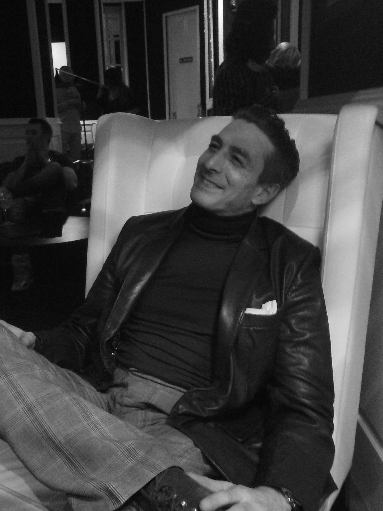

Fine Art Photographer
Madrid · San Francisco · Lisbon · Piraeus · Valencia
Jayro Montesinos is a fine art photographer based in Valencia, Spain, specializing in contemporary author photography with a focus on male nude art, LGTBI photography, portraiture, dance, and still life. His work explores identity, the human body, light, and composition through a minimalist, understated, and contemporary aesthetic.
He began his career in the LGTBI editorial environment in Spain, working as an assistant at Zero magazine during a key period for LGTBI visibility and legal rights in the country. He holds a degree in Political Science from the Complutense University of Madrid, a background that brings a sociopolitical and analytical layer to his artistic vision.
His life and international trajectory have been shaped by extended periods living in the United States (San Francisco), Portugal, and Greece (Piraeus), experiences that have directly influenced his aesthetic vision, cultural sensitivity, and development as a contemporary photographer.
His work has been published in photography and art magazines in both the United States and Spain, including Arte Fotográfico. He has held a solo exhibition at the LGTBI Visible Festival and has participated in group exhibitions in New York within the context of the Leslie-Lohman Museum of Art. His work is part of private collections of fine art photography collectors, with a strong focus on male nude artistic photography and limited edition works.
He is currently developing a new series of male nude fine art photography books in limited editions, aimed at collectors and the international contemporary art market. In parallel, he is working on editorial series such as Light and Shadow, Symmetry, People, Landscape and Still Life — black and white photography currently in development for future publication.
Limited edition fine art prints available. Private studio by appointment in Valencia, Spain.
Private studio in Valencia. Available for campaigns, editorial and fine art projects.
Get in touch